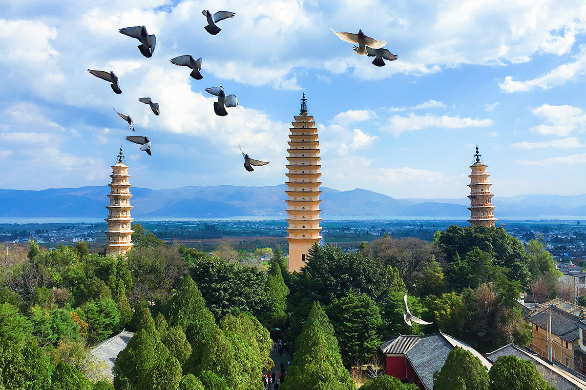
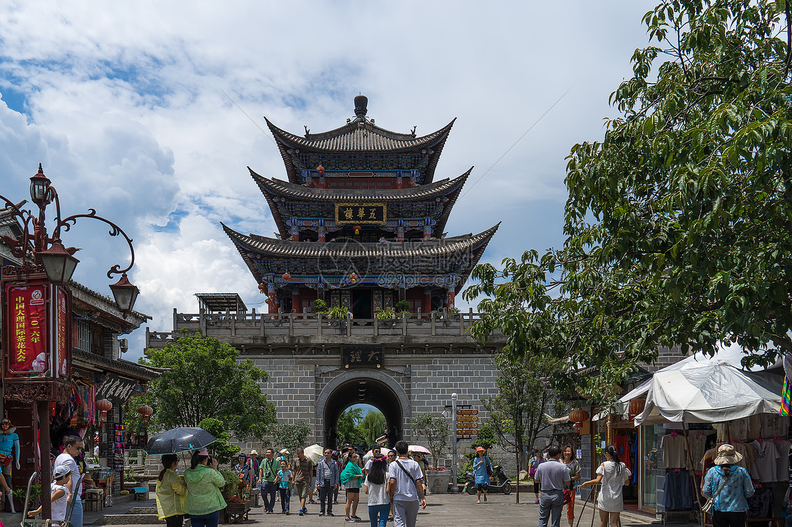
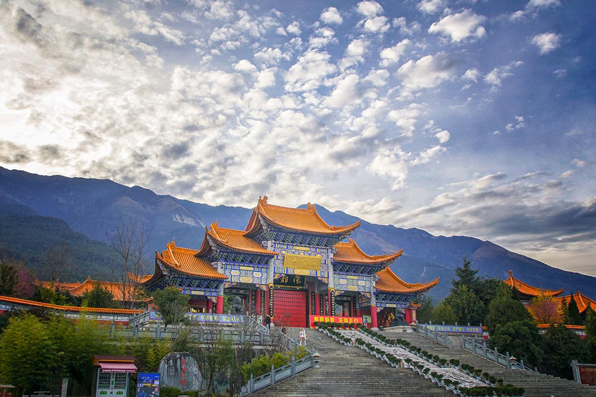
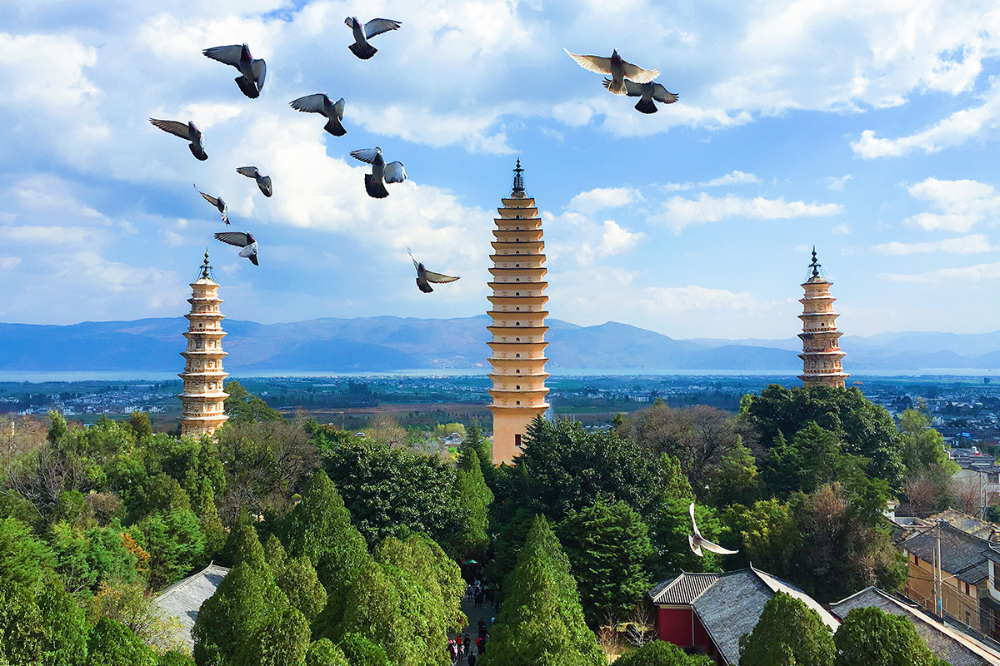
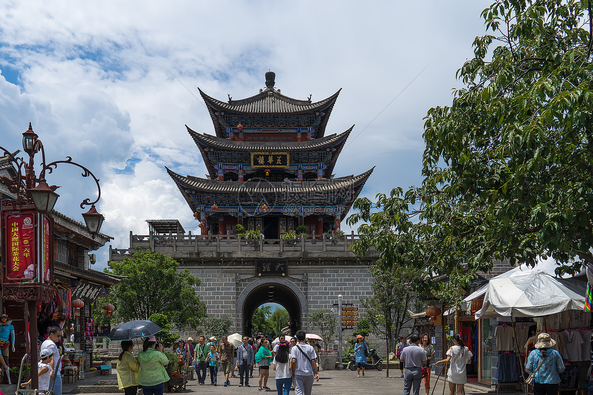
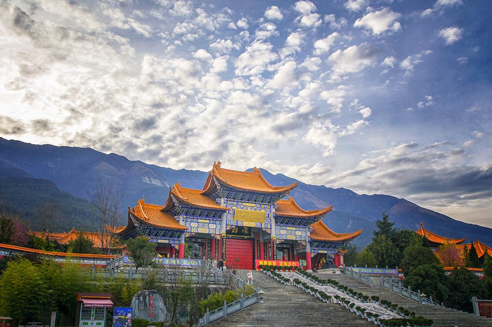
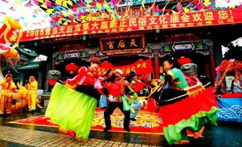
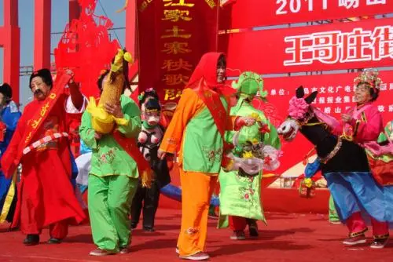

青岛
青岛好玩的地方有哪些？


 







About
青岛必打卡项目——八大关
关内花石楼和公主楼最为有名，建筑风格独特，需要收取门票，是来此必打卡地。 ·除观赏建筑外，还可欣赏八大关四季美景，韶关路全植碧桃，春季开花；正阳关路遍种紫薇，夏天盛开；居庸关路是五角枫，秋季霜染枫红；紫荆关路两侧是成排的雪松，四季常青。
关内花石楼和公主楼最为有名，建筑风格独特，需要收取门票，是来此必打卡地。 ·除观赏建筑外，还可欣赏八大关四季美景，韶关路全植碧桃，春季开花；正阳关路遍种紫薇，夏天盛开；居庸关路是五角枫，秋季霜染枫红；紫荆关路两侧是成排的雪松，四季常青。
交通 公交： 乘坐458/501路公交车至宁武关路公交站，步行约49米即可到达 地铁： 乘坐地铁3号线至太平角公园地铁站，步行约300米即可到达 门票 免费 tips: 八大关内部分景点需收取门票，具体价格以景区公示为准。
About
青岛必打卡项目—— 崂山风景区
··位于青岛东部，有“海上第一名山”的美称，最高峰为海拔1133米的巨峰，以雄伟、壮观、奇特、秀丽成为著名的道教名山。 ·崂山的道教宫观、日出与云海，都极富盛名；南线是流清河和垭口；东线是仰口；中线是北九水；走水路在太清湾登陆的游客主要游览太清和上清景区。
·景区每年四月举办崂山登山节；每年五月举办崂山樱桃会， 届时游人众多，十分热闹。
九水游览区： 自驾：由青银高速李村出口下，沿九水东路、滨海公路、九水旅游专用路至九水游客服务中心，换乘观光车进入； 公交：乘坐112路、619路，639路车至卧龙村，换乘观光车进入； 地铁：乘坐11号线至北九水站，下地铁即可在零换乘中心购票乘坐观光车进入景区。 门票 淡季:一票制门票160人民币/流清—太清、巨峰游览区 华严—仰口游览区（2日内有效）120人民币/九水游览区（当日有效）70人民币 (1月1日-3月31日 周一-周日) 旺季:一票制联票【景区大通票】210人民币/流清—太清、巨峰游览区 华严—仰口游览区（2日内有效）150人民币/九水游览区（当日有效）90人民币 (4月1日-12月

About
青岛必打卡项目——栈桥
青岛最早的军事专用人工码头，是青岛标志性建筑和著名风景游览点。 ·南端防波堤内部的八角楼被称为“回澜阁”。伫足于此，可以欣赏到青岛十景之一的“飞阁回澜”。
·北侧沿岸被称为“栈桥公园”，园内花草郁郁葱葱，设有石椅供游客休憩，可以欣赏海天风景。
交通 乘坐6、202、217、220、25路至广西路浙江路站(公交站)下车，步行约300米可达。 门票 (1月1日-12月31日 周一-周日) tips: 具体详情请咨询景区 开放时间 全天 (1月1日-12月31日 周一-周日)

青岛习俗
青岛是一个现代化的城市，但也在向世界展示着地方民俗特色文化。
 地方民俗勾勒并凸显了青岛一地文化中的城市特色，而青岛能够为世界留下深刻记忆的，也正是囊括了民间传统文化在内的城市特色人文风貌。能够反映青岛一地人文风貌的，远不止于五花八门的传统民间工艺与民间小吃，还有近百年来青岛民间居住形式的里院建筑；具有浓郁地方特色的戏剧茂腔、柳腔；以妈祖为代表的沿海民间民俗信仰及各种民族文化节等。